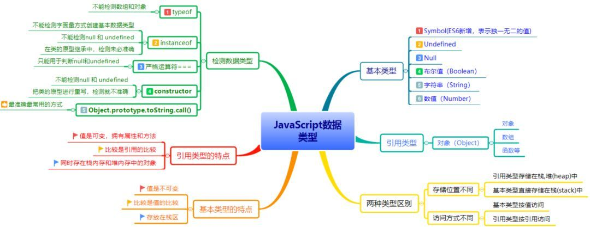
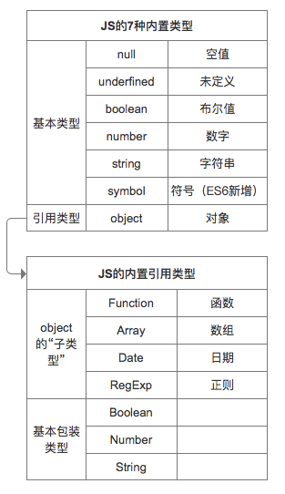
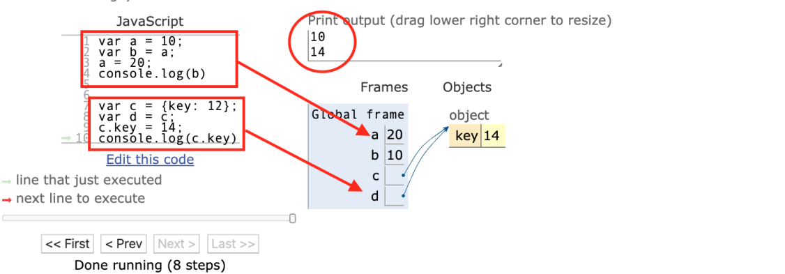
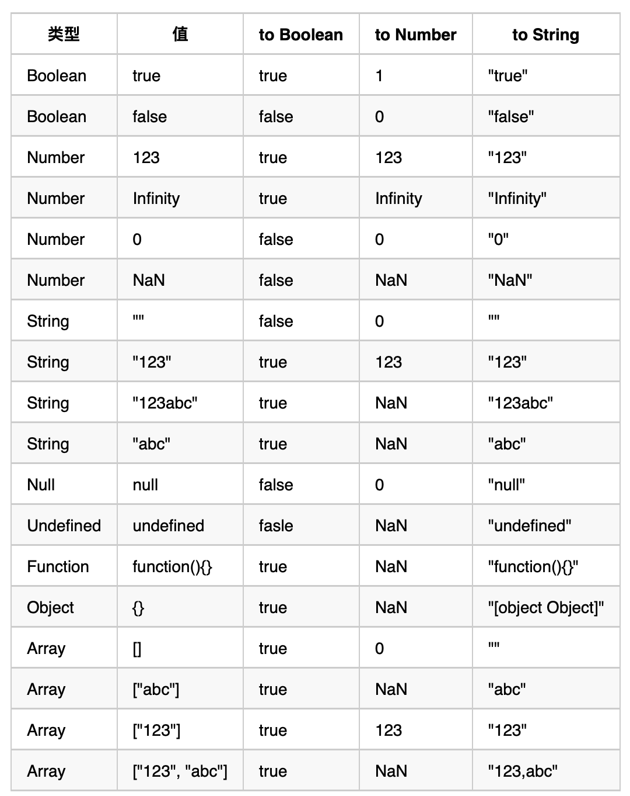

Software is like sex; it’s better when it’s free.
——Linus Torvalds (Linux之父)
JS 数据类型
第一部分 JS的数据类型及其检测
JS数据类型总揽


简述，值类型与引用类型的图解示例。

typeof
只能区分基本类型

栈堆
来源：Stack的三种含义
**
程序运行的时候，需要内存空间存放数据。一般来说，系统会划分出两种不同的内存空间：
- 一种叫做stack（栈），
- 一种叫做heap（堆）。
它们的主要区别是：
- stack是有结构的，每个区块按照一定次序存放，可以明确知道每个区块的大小；
- heap是没有结构的，数据可以任意存放。因此，stack的寻址速度要快于heap。
其他的区别还有，一般来说，每个线程分配一个stack，每个进程分配一个heap，也就是说，stack是线程独占的，heap是线程共用的。此外，stack创建的时候，大小是确定的，数据超过这个大小，就发生stack overflow错误，而heap的大小是不确定的，需要的话可以不断增加。
根据上面这些区别，数据存放的规则是：只要是局部的、占用空间确定的数据，一般都存放在stack里面，否则就放在heap里面。请看下面这段代码（来源）。
1 | public void Method1() |

当Method1方法运行结束，会发生什么事？
回答是整个stack被清空，i、y和cls1这三个变量消失，因为它们是局部变量，区块一旦运行结束，就没必要再存在了。而heap之中的那个对象实例继续存在，直到系统的垃圾清理机制（garbage collector）将这块内存回收。因此，一般来说，内存泄漏都发生在heap，即某些内存空间不再被使用了，却因为种种原因，没有被系统回收。
第二部分 类型转换
ToString ValueOf
Javascript 中几乎所有类型都具有toString和valueOf属性。几乎所有的类型对象比如Number,String,Boolean,Array,Function,Object,Date,RegExp的原型对象上都有各自的toString或valueOf方法的实现,故它们的实例化的对象自然就继承了这两个方法。下面看一下这些类型的原型对象上是否有这两个方法的实现：
1 | Number.prototype.hasOwnProperty('toString'); //输出true |
上面代码中，只有Array,Function,RegExp的原型上没有valueOf属性,但是为什么其实例化对象能调用该方法呢？
我们都知道上面所有列举的类型的原型(prototype)都是继承于Object的原型(prototype)的，当Array,Function,RegExp的实例化对象找不到某个属性时会沿着原型链往上找，直到找到或给出undefined。其实例对象调用的是Object原型上的valueOf，
**
**valueOf()作用

ToPrimitive
抽象方法ToPrimitive将对象值转换为相应的基本类型值。该方法会
首先检查该值是否有valueOf()方法，如果有并且返回基本类型值，就使用该值进行强制类型转换；
如果没有就使用toString()的返回值(如果存在)来进行强制类型转换；
如果valueOf()和toString()均不返回基本类型值，会产生TypeError错误。
1 | var a = [1,2] |
- 数组的valueOf()操作无法得到简单基本类型值，于是调用toString()，
- 因此两个数组变成了”1,2”和”3,4”
- 将它们拼接后返回。
汇总
可以参考下册两张图，好好研究下


练习题
1. [] == ![]
1 | 1. []作为对象ToPrimitive得到 '' |
2. [undefined] == false
1 | - 第一步，应用 规则5 ，[undefined]通过toString变成 '', |
参考文章
Javascript 隐式类型转换，一篇就够了！
你可能忽略的js类型转换
JavaScript中的强制类型转换
深入理解JavaScript中的toString，valueOf属性